A robot arm that picks, inspects and sorts manufactured parts on its own, running entirely on a single Intel Core Ultra laptop.
Intel Physical AI Challenge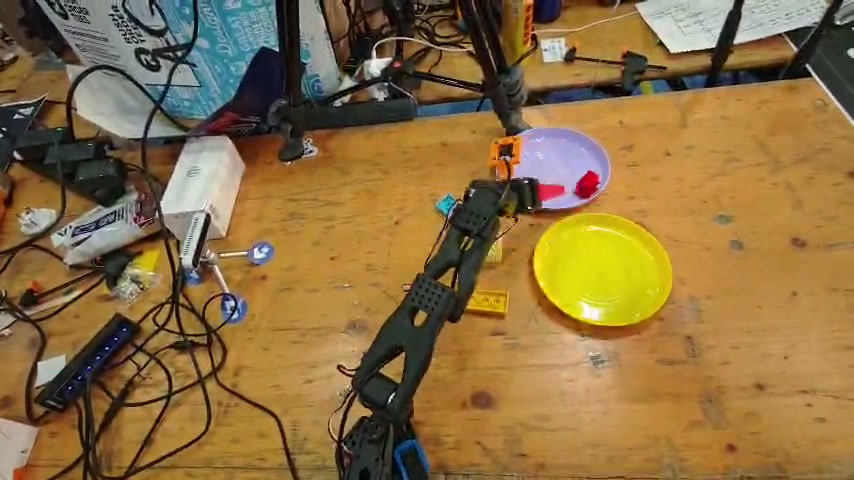
| Component | Params | Mode | Trainable |
| LLM attention + MLP | 3,633M | LoRA | 114M · 3.1% |
| Vision encoder attention + MLP | 381M | LoRA | 32M · 8.5% |
| Vision patch embedding | 0.7M | Frozen | |
| Connector | 57M | Full | 100% |
| Action expert | 578M | Full | 100% |
| LLM final norm | 2.6k | Full | 100% |
| Embeddings, norms, positional | 397M | Frozen | |
| LM head | 396M | Frozen | |
| Total | 5,442M | 781M |
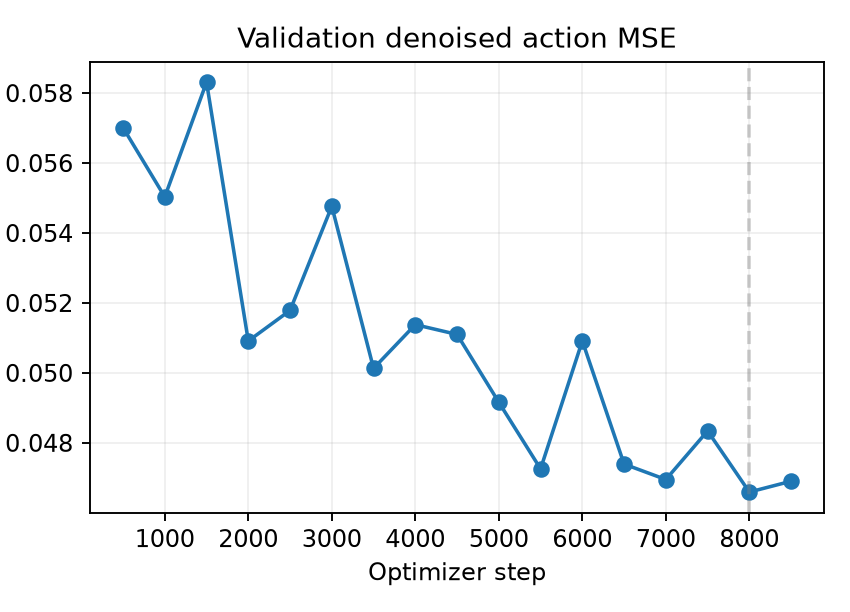
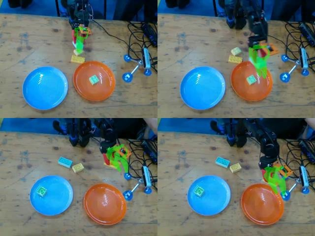
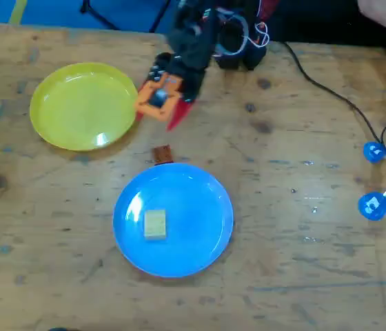
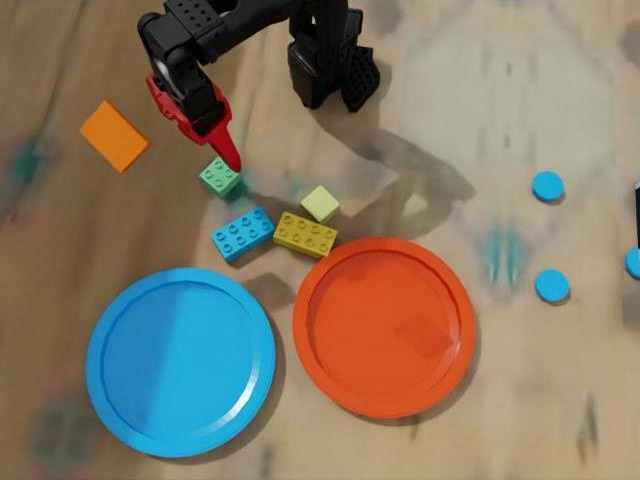
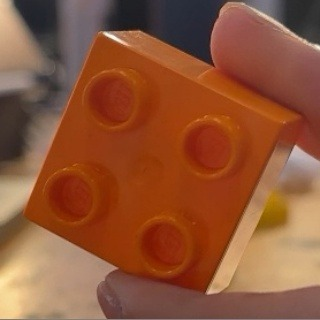
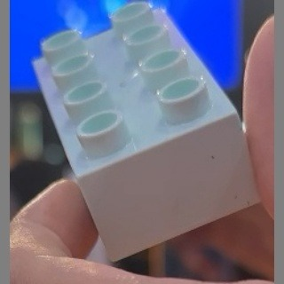
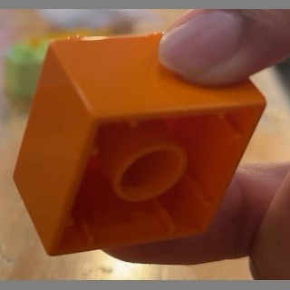
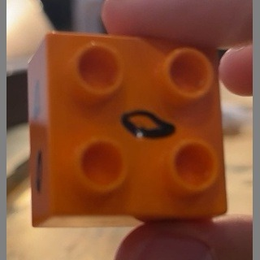
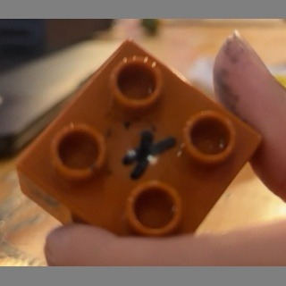
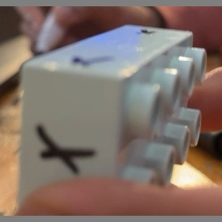